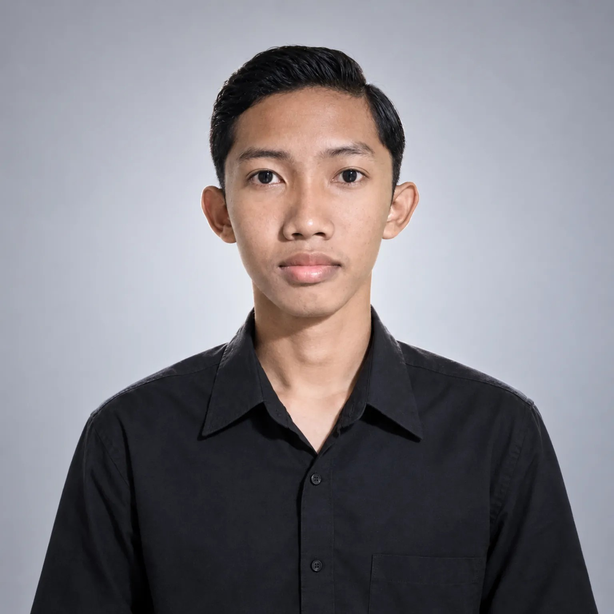

Digital Creativity
Mengeksplorasi ide dan mengekspresikannya melalui karya digital.
PERSONAL PORTFOLIO 2026
HALO, SAYA
Saya tertarik pada dunia teknologi, kreativitas, dan ide-ide baru. Selalu belajar, mencoba, dan berkembang untuk menciptakan sesuatu yang lebih baik.

Saya adalah individu kreatif yang selalu tertarik mengeksplorasi ide, teknologi, dan dunia digital. Setiap proses adalah kesempatan untuk belajar, berkembang, dan menciptakan karya yang lebih baik.
Saat ini saya terus membuka diri terhadap pengalaman baru, mencoba hal-hal berbeda, dan mengasah kemampuan melalui proses yang konsisten.
Mari terhubung ↗Daftar minat, bukan klaim keahlian. Saya percaya kemampuan tumbuh melalui rasa ingin tahu, latihan, dan keberanian mencoba.
Mengeksplorasi ide dan mengekspresikannya melalui karya digital.
Mengenal teknologi baru dan memahami bagaimana sesuatu bekerja.
Memperhatikan detail, komposisi, dan cara menyampaikan pesan secara visual.
Mengembangkan diri sedikit demi sedikit melalui pengalaman baru.
Bagian ini disiapkan untuk menampilkan proyek sungguhan. Ganti contoh berikut dengan hasil karya, deskripsi, dan tautan milikmu.
✳ Kartu proyek saat ini adalah contoh tampilan, bukan klaim proyek yang sudah selesai.
Terbuka untuk berkenalan, bertukar ide, dan berbagi pengalaman. Jangan ragu untuk menyapa.
Silakan hubungi saya melalui email atau media sosial.